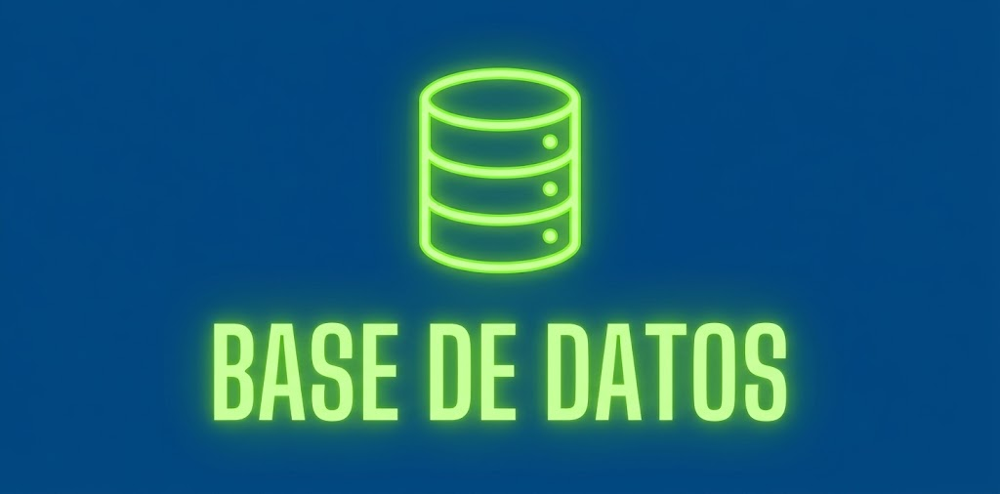

Impartido por: Google / UTL
Principios de Ciberseguridad
Docente: Mtro. Juan Pérez
★ 4.8 | Más de 43 mil valoraciones
Principiante Curso
Impartido por: Google / UTL
Docente: Mtro. Juan Pérez
★ 4.8 | Más de 43 mil valoraciones
Principiante CursoImpartido por: Google Cloud
Docente: Dra. Ana Martínez
★ 4.7 | Más de 13 mil valoraciones
Principiante EspecializaciónImpartido por: Google / UTL
Docente: Ing. Carlos López
★ 4.8 | Más de 165 mil valoraciones
Principiante CertificaciónImpartido por: Google / UTL
Docente: Lic. Sofía Rodríguez
★ 4.8 | Más de 123 mil valoraciones
Principiante Curso
Impartido por: UTL / TechAcademy
Docente: Ing. Roberto Gómez
★ 4.9 | Más de 85 mil valoraciones
Intermedio Curso
Impartido por: UTL / TechAcademy
Docente: Mtra. Laura Sánchez
★ 4.7 | Más de 50 mil valoraciones
Avanzado Certificación